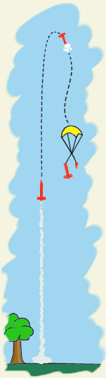
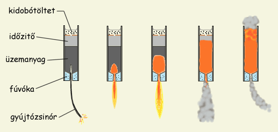

|  |
| 1. Ábra: A repülés szakaszai |
Egy hatékony ejtőernyőrendeszer tervezése és építése először is rakétánk rövid repülésének a minél behatóbb megértését feltételezi. A modellrakéták repülése a mellékelt ábrán is látható fontosabb mozzanatokra osztható:
az elindulást követő néhány másodpercben a motor tolóereje hajtja előre a rakétát. Ez a szakasz általában igen rövid (0.5 - 3 s), a rakétamotrok rövid üzemidejéből adódóan. Léteznek kisméretű kompozit motorok, amelyek 7 - 10 s hosszan is képesek tolóerőt szolgáltatni, de ez jellemzően nem amatőr ketegória. Ebben a szakaszban a rakéta folyamatosan gyorsul amíg a tolóerő tart illetve míg a légellenállás és gravitáció összege nagyobb nem lesz a tolóerőnél. A gyorsulás az indulás első pillanataiban a legnagyobb, a jellemző gyorsulási értékek 5 - 15 g közé tehetőek.
az üzemanyag elfogytával a rakéta tovább halad felfele amíg a lendülete el nem fogy. Ebben a szakaszban a rakéta akár háromszor nagyobb távot is megtehet, mint az első szakaszban. Rögtön a tolóerő megszűnte után igen magasak a lassulási értékek (5 - 10 g de akár még nagyobb is), mivel nagy sebességeknél nagyon nagy a rakétára ható, légellenállás okozta fékezőerő.
amikor a gravitáció és a légellenállás teljesen felemészti lendületet, a rakéta eléri pályája csúcsát, itt visszafordul és a gravitáció hatására lefele kezd zuhanni. Ez az a pont, ahol az ejtőernyő ki kellene oldódjon, mert itt a legkisebb a rakéta sebessége. Ha túl korán történik a kioldás, a rakétánk nem éri el a maximális magasságot, ha túl későn, lehet hogy a földbe csapódik. Fennáll az a veszély is, hogy nagy sebességen történő kioldásnál az ernyő nem bírja meg a hirtelen sokkot és elszakad valamelyik része.
az utolsó szakasz az ejtőernyős süllyedés, már amennyiben az ejtőernyő időben kinyílt. Ilyenkor az egyetlen fennálló veszély az, hogy a rakéta elsodródik a széllel és elveszítjük.
A legnagyobb nehézséget a pálya legmagasabb pontjának meghatározása jelenti. Kétféle megközelítés létezik a kioldás pontjának meghatározására. Az első eljárás az egyszerűbb, viszont pontatlanabb: szimulációval ki kell számolni a motor kiégése és a legmagasabb pont elérése közti időt, majd egy beépített időzítő segítségével kioldani az ernyőt a kiszámított pillanatban. A módszer nem a legpontosabb, mivel a szimulációk gyakran nem tükrözik a valóságot, így megeshet, hogy az időzítő nem a tetőponton oldja ki az ejtőernyőt. Legtöbb esetben azonban elfogadható ez a pontosság, mivel a legmagasabb pont környékén a rakéta igen lassan mozog (az utolsó 5 m megtételéhez kb. 1 másodpercre van szüksége), 1 - 2 másodperc eltérés tehát nem határoz túl sokat. A másik megközelítés szerint valamilyen módon a magasságot kell mérni sűrű időközönként és amint csökkenni kezd az értéke, kioldani az ernyőt. A magasság helyett lehet nyomást vagy sebességet is mérni, mivel ezek kapcsolatban állnak egymással. Ezt a megközelítést nehezíti, hogy mindenik esetben műszeres megoldásról van szó, mivel az említett paramétereket valmivel mérni kell.
A pirotechnikai időzítőtöltet használata a legegyszerűbb (és kis rakéták esetén talán az egyetlen alkalmazható) megoldás. Ez egy lassan égő keverék, amely a motorban az üzemanyag és a kidobótöltet között helyezkedik el. Anyaga lehet lassított égésű üzemanyag, pl. KNO3 és szén 1:1 arányú keveréke. Lőporos motrokba megfelel KNO3/dextróz 1:1 keveréke is, amely azonos nyomáson sokkal lassabban ég, mint a lőporos üzemanyagok. "Cukros" üzemanyagokkal KNO3/epoxy időzítőt szokás használni, ez igen lassan ég a cukros motrok magas nyomásán is, így kevés kell belőle. Nem feltétlenül szükséges, de jó, ha az időzítőtöltet égése jó sok füsttel jár, mert így nyomon követhető a rakéta a motor leállta után is. Kis motorátmérők esetén a késleltetőtöltet az üzemanyag fölé, ennek folytatásába van préselve és a motor teljes keresztmetszetét kitölti. Az időzítőt egy középen átlyukasztott kartonkarikával szokás lezárni, ez után következik majd a kidobótöltet, amely rendszerint 0.3 - 0.5 g feketelőpor. A kidobótöltetet nem kell préselni, hogy megfelelően gyors legyen az égése. Hogy ne hulljon ki a kidobótöltet, a motrot egyszerűen egy papírkarikával zárjuk le felülről. A papírkarika átmérője valamivel nagyobb kell legyen a motor belső átmérőjénél, így ha a motor töltésére használt présrúdal a motorba nyomjuk, megszorul benne. A papírkarikát olyan mélyen kell csak belenyomni a motorba, hogy a kidobótöltet még szabadon mozoghasson alatta (a motrot megrázva zörgés kell kihallatszódjon).
|  |
| 2. Ábra: Késleltető- és kidobótöltettel ellátott lőporos motor működésének fázisai |
A mellékelt ábrán egy hátulégős, késleltető- és kidobótöltettel ellátott lőporos kismotor működésének fázisai láthatóak. Begyújtás után az égés kiterjed az üzemanyag teljes égési felületére és afúvókán kiáramló égéstermékek tolóerőt termelnek. Ekkor van a rakéta a repülés 1. szakaszában. Amikor elfogy az üzemanyag, az égés átterjed a késleltetőtöltetre. Ekkor a motor nyomása leesik, a tolóerő gyakorlatilag megszűnik, a rakéta pedig tehetetlenségénél fogva megy felfele (2. szakasz). Miután az időzítőtöltet is mind elégett, a papírkarika lyukán keresztül a láng begyújtja a kidobótöltetet. A kidobótöltet hirtelen fejlesztett gázai hivatottak kinyomni a motor fölött elhelyezkedő ejtőernyőt a rakéta törzséből (jó tervezés esetén ez a pillanat repülés 3. szakaszában kellene bekövetkezzen).
A késleltetőtöltet bepréselte után felmerülhet a kérdés, hogy mi is tartja meg felülről az üzemanyagtömböt, hiszen a motor mechanikai szempontból jóformán lezáratlan marad. A válasz egyszerű: a lőporos motrok üzemi nyomása alacsonyabb, semhogy a motor nyitott végén ki tudná nyomni a bepréselt üzemanyagtömböt. Változhat azonban a helyzet nagyobb nyomáson üzemelő (pl. cukros vagy kompozit) motroknál, illetve agyobb motorátmérők esetén, amikor is az égéstér nyomása nagyobb mint az üzemanyagtömböt fogva tartó surlódási erő. Ilyen esetekben a motor felül leszűkül és késleltető egy szűkített átmérőjű részbe kerül. Így egyrészt kevesebbet kell használni belőle, másrészt meg biztosan nem fogja kilőni a nyomás az üzemanyagot a motorból. Természetesen a kidobótöltet is a szűkített részben lesz, a számára kialakított üregben (részletes leírás a motrok építésénél).
A késleltetőtöltet használatának kétségkívüli előnye, hogy rendkívül egyszerű és mindenféle segédberendezés nélkül begyújtja a kidobótöltetet. Hátránya, hogy csak egyféle ejtőernyőelrendezést tesz lehetővé, valamint az, hogy előre tudnunk kell a rakétánk majdani jellemzőit a töltet mennyiségének (az időzítés hosszának) meghatározása érdekében. A kereskedelemben kapható mortok általában többféle időzítéssel kerülnek forgalomba, így kiválaszthatjuk a számunkra megfelelő tolóerő/időzítés párost.
Az elektromos időzítő használata nagyobb rakétáknál válik lehetségessé, ahol a törzs átmérője elég nagy, hogy beleférjen az áramkör, illetve a motor elég erős ahhoz, hogy az áramkör/elemek/gyújtó képviselte plusz tömeg ne jelentsen gondot. Az időzítő akár néhány gombelemről is működtethető és elég ha 3....10 s tartományban állítható. Az időzítő "élesítését" egy gravitációs kapcsoló végzi el, amely a tolóerő megszűntekor előremozdul és bezárja az áramkört.